The concept of colorimetrically defined RGB spaces has been around for a long time — at least since the days of the development of color television. But the popularity in digital imaging applications grew substantially only after Adobe introduced the "RGB Working Space" into Photoshop 5.0. Since that time, many different working space definitions have been added to the original set of color television spaces.
This page summarizes some of the factual information about some of the more popular RGB working spaces. This may serve as a convenient reference source to those investigating the relative merits of each. It is organized as follows:
| Specifications | • | Complete colorimetric specifications for the working spaces, along with some efficiency measurements. |
| Side Notes | • | Some interesting observations about a few of the working spaces. |
| Gamut Projections | • | Views of all gamuts projected onto the a*/b* plane. |
| Adapted Primaries | • | A table containing all working space primaries adapted to D50. |
| Color Set Evaluations | • | Each working space is evaluated against selected color sets. |
| Name | Gamma | Reference White |
Red Primary | Green Primary | Blue Primary | Volume (ΔE3) |
Lab Gamut Efficiency % |
Coding Efficiency % |
||||||
|---|---|---|---|---|---|---|---|---|---|---|---|---|---|---|
| x | y | Y | x | y | Y | x | y | Y | ||||||
| Lab Gamut | - | D50 | - | - | - | - | - | - | - | - | - | 2,381,085 | 97.0 | 35.1 |
| Adobe RGB (1998) | 2.2 | D65 | 0.6400 | 0.3300 | 0.297361 | 0.2100 | 0.7100 | 0.627355 | 0.1500 | 0.0600 | 0.075285 | 1,208,631 | 50.6 | 100.0 |
| Apple RGB | 1.8 | D65 | 0.6250 | 0.3400 | 0.244634 | 0.2800 | 0.5950 | 0.672034 | 0.1550 | 0.0700 | 0.083332 | 798,403 | 33.5 | 100.0 |
| Best RGB | 2.2 | D50 | 0.7347 | 0.2653 | 0.228457 | 0.2150 | 0.7750 | 0.737352 | 0.1300 | 0.0350 | 0.034191 | 2,050,725 | 77.6 | 96.5 |
| Beta RGB | 2.2 | D50 | 0.6888 | 0.3112 | 0.303273 | 0.1986 | 0.7551 | 0.663786 | 0.1265 | 0.0352 | 0.032941 | 1,717,450 | 69.3 | 99.0 |
| Bruce RGB | 2.2 | D65 | 0.6400 | 0.3300 | 0.240995 | 0.2800 | 0.6500 | 0.683554 | 0.1500 | 0.0600 | 0.075452 | 988,939 | 41.5 | 100.0 |
| CIE RGB | 2.2 | E | 0.7350 | 0.2650 | 0.176204 | 0.2740 | 0.7170 | 0.812985 | 0.1670 | 0.0090 | 0.010811 | 1,725,261 | 64.3 | 96.1 |
| ColorMatch RGB | 1.8 | D50 | 0.6300 | 0.3400 | 0.274884 | 0.2950 | 0.6050 | 0.658132 | 0.1500 | 0.0750 | 0.066985 | 836,975 | 35.2 | 100.0 |
| Don RGB 4 | 2.2 | D50 | 0.6960 | 0.3000 | 0.278350 | 0.2150 | 0.7650 | 0.687970 | 0.1300 | 0.0350 | 0.033680 | 1,802,358 | 72.1 | 98.8 |
| ECI RGB v2 | L* | D50 | 0.6700 | 0.3300 | 0.320250 | 0.2100 | 0.7100 | 0.602071 | 0.1400 | 0.0800 | 0.077679 | 1,331,362 | 55.3 | 99.7 |
| Ekta Space PS5 | 2.2 | D50 | 0.6950 | 0.3050 | 0.260629 | 0.2600 | 0.7000 | 0.734946 | 0.1100 | 0.0050 | 0.004425 | 1,623,899 | 65.7 | 99.5 |
| NTSC RGB | 2.2 | C | 0.6700 | 0.3300 | 0.298839 | 0.2100 | 0.7100 | 0.586811 | 0.1400 | 0.0800 | 0.114350 | 1,300,252 | 54.2 | 99.9 |
| PAL/SECAM RGB | 2.2 | D65 | 0.6400 | 0.3300 | 0.222021 | 0.2900 | 0.6000 | 0.706645 | 0.1500 | 0.0600 | 0.071334 | 849,831 | 35.7 | 100.0 |
| ProPhoto RGB | 1.8 | D50 | 0.7347 | 0.2653 | 0.288040 | 0.1596 | 0.8404 | 0.711874 | 0.0366 | 0.0001 | 0.000086 | 2,879,568 | 91.2 | 87.3 |
| SMPTE-C RGB | 2.2 | D65 | 0.6300 | 0.3400 | 0.212395 | 0.3100 | 0.5950 | 0.701049 | 0.1550 | 0.0700 | 0.086556 | 758,857 | 31.9 | 100.0 |
| sRGB | ≈2.2 | D65 | 0.6400 | 0.3300 | 0.212656 | 0.3000 | 0.6000 | 0.715158 | 0.1500 | 0.0600 | 0.072186 | 832,870 | 35.0 | 100.0 |
| Wide Gamut RGB | 2.2 | D50 | 0.7350 | 0.2650 | 0.258187 | 0.1150 | 0.8260 | 0.724938 | 0.1570 | 0.0180 | 0.016875 | 2,164,221 | 77.6 | 91.9 |
Note: The gamma of sRGB is not exactly 2.2, but rather, is a grafting together of two different functions, that when viewed together, may be approximated by a simple 2.2 gamma curve. When using a simple gamma function, Photoshop calls this "Simplified sRGB." All calculators, spreadsheets and reference tables found on my entire site use the proper functions, not the simplified versions. The proper sRGB functions may be found here and here.
If you are interested in the RGB-to-XYZ and XYZ-to-RGB matrices for these working spaces, you will find them summarized here.
The first entry in the table is the Lab Gamut. This is the set of Lab color coordinates for which there could possibly be a physical sample. These are the "real colors." Lab color coordinates that lie outside this gamut can never exist in nature, and therefore it is not important that these coordinates be represented in a working space definition. Further information about the Lab Gamut may be found here and 3D images of it may be found here.
Since the Lab TIFF specification, the ICC profile specification and Adobe Photoshop all use a D50, 2° standard observer basis for Lab, all of the above working spaces that are not similarly defined have been adapted from their native reference white to D50 using the Bradford transformation when computing the volume and efficiencies. This particular transformation is generally accepted as superior to other adaptation algorithms, such as von Kries (see related article evaluating chromatic adaptation methods here).
Gamut volumes were computed by tessellation of the gamut surfaces into hundreds of thousands of tiny triangles that collectively form an enclosed polyhedron. The volume of a polyhedron may easily be computed using the technique described in the following:
Ronald L. Goldman, Area of Planar Polygons and Volume of Polyhedra, Graphics Gems II, Morgan Kaufmann, 1991, pp. 170, 171
The Lab Gamut Efficiency % indicates the percent of the entire Lab Gamut (i.e. all colors visible to the eye) that the working space encompasses. As a general rule, a larger value is superior to a smaller value, since it defers any gamut compression and color clipping decisions to a later time. The higher the efficiency, the less likely it is that a color may be clipped in the capture/encoding process.
The Coding Efficiency % indicates the relative portion of the encoding space (e.g. RGB) that represents real colors. Some of the larger volume working spaces contain many RGB triplets for which there is no physical counterpart, and therefore could be considered wasteful.
These two efficiency metrics are perhaps better understood by looking at an example comparing ProPhoto with sRGB. ProPhoto captures a relatively large portion of the Lab Gamut (91%), but in order to do that, it must sacrifice much of its coding space to waste (13%). By contrast, sRGB captures a smaller portion of the Lab Gamut (35%), but every single RGB triplet represents a real color, so there is no waste. As you can see, these two efficiencies are at odds with each other — as you strive for higher Lab Efficiency, you generally lose in Coding Efficiency.
Another interesting observation from the table relates to native Lab encoding. The established methods of integer encoding of Lab color (Lab TIFF, ICC, Photoshop) will clip some of the Lab Gamut. But even more devastating than that is the gross coding inefficiency (only 35%). This means that nearly two-thirds of Lab coding space is wasted on colors that do not even exist. This may be seen here. This inefficiency "squeezes" real colors tightly together, resulting in possible quantization losses. So converting an image into Lab for the purposes of applying a color correction in Photoshop can severly reduce the number of unique colors in your image. This is discussed further here. Whether this is a significant loss depends on the particular situation, but you should at least be aware of it.
Perhaps you've learned that you can compute the luminance of an RGB color by taking 30% of its red component plus 59% of its green component plus 11% of its blue component. These weightings are often expressed in three-digit precision as 29.9% red, 58.7% green and 11.4% blue. Did you ever wonder where these weightings came from?
You can find them in the above table as the relative Y values for red, green and blue for the NTSC color model. The more precise weightings are 29.8839% red, 58.6811% green and 11.4350% blue. But it should also be obvious that the real RGB weightings depend upon the color system in use. So the "standard" weightings are incorrect for other RGB systems like sRGB or Adobe RGB (1998).
Another relevant fact is that these weightings must be made in a linear RGB space, that is, after the gamma companding function has been removed. It is very common to see the weightings applied bluntly to the companded RGB values, which is wrong.
The following four RGB systems are identical, except for the green primary:
Since the PAL / SECAM television standard existed first, it is logical to assume that the other three derived from it. I have heard the rumor that the green primary for Adobe RGB came about by the accidental use of the NTSC green primary, used incorrectly since NTSC is defined relative to Illuminant C while Adobe RGB is defined relative to D65. After the mistake was discovered, Adobe decided to keep it since their experiences with this accidental reference space were favorable.
You can learn about some of the working space authors here.
Below are views of each of the working space gamuts, as viewed from above in Lab space. The darker blue square represents the limited range of Lab encoding offered by normal integer encoding methods as described above. The red outline is the projection of the Lab Gamut. Each gamut is rendered as its L* value only, so darker shades represent darker colors, as seen especially in the blue region (lower right of each image).
| 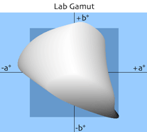 |
| 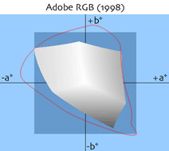 | |
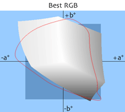 | 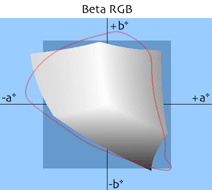 |
| 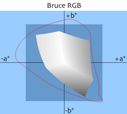 | 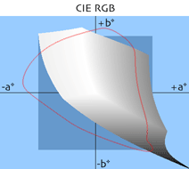 | 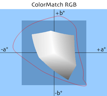 | 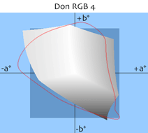 |
| 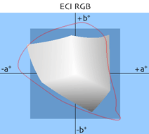 | 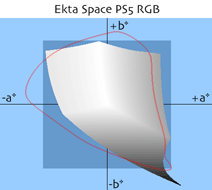 | 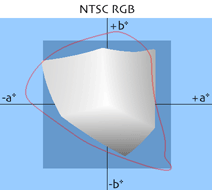 | |
| 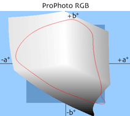 | 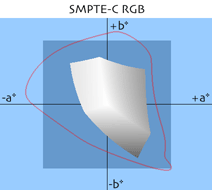 | 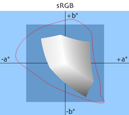 | 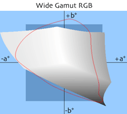 |
Since the ICC specification and Adobe Photoshop both use a reference white of D50, the working space primaries that are specified relative to some other reference white must first be adapted to D50 before they may be used in a D50 environment, or be meaningfully compared with one another. You can learn the mathematics of chromatic adaptation here, and you may use an online chromatic adaptation calculator here. For those wishing to avoid the tedium, I have adapted the above working space primaries from their native reference whites to the D50 reference white, using the Bradford transform (the transform used by Photoshop). The results are summarized below. In this table, those working spaces highlighted in yellow needed adaptation, the others were already specified in D50, and therefore remain unchanged from the values shown in the table at the top of this page.
| Name | Red Primary | Green Primary | Blue Primary | ||||||
|---|---|---|---|---|---|---|---|---|---|
| x | y | Y | x | y | Y | x | y | Y | |
| Adobe RGB (1998) | 0.648431 | 0.330856 | 0.311114 | 0.230154 | 0.701572 | 0.625662 | 0.155886 | 0.066044 | 0.063224 |
| Apple RGB | 0.634756 | 0.340596 | 0.255166 | 0.301775 | 0.597511 | 0.672578 | 0.162897 | 0.079001 | 0.072256 |
| Best RGB | 0.734700 | 0.265300 | 0.228457 | 0.215000 | 0.775000 | 0.737352 | 0.130000 | 0.035000 | 0.034191 |
| Beta RGB | 0.688800 | 0.311200 | 0.303273 | 0.198600 | 0.755100 | 0.663786 | 0.126500 | 0.035200 | 0.032941 |
| Bruce RGB | 0.648431 | 0.330856 | 0.252141 | 0.300115 | 0.640960 | 0.684495 | 0.155886 | 0.066044 | 0.063364 |
| CIE RGB | 0.737385 | 0.264518 | 0.174658 | 0.266802 | 0.718404 | 0.824754 | 0.174329 | 0.000599 | 0.000588 |
| ColorMatch RGB | 0.630000 | 0.340000 | 0.274884 | 0.295000 | 0.605000 | 0.658132 | 0.150000 | 0.075000 | 0.066985 |
| Don RGB 4 | 0.696000 | 0.300000 | 0.278350 | 0.215000 | 0.765000 | 0.687970 | 0.130000 | 0.035000 | 0.033680 |
| ECI RGB v2 | 0.670000 | 0.330000 | 0.320250 | 0.210000 | 0.710000 | 0.602071 | 0.140000 | 0.080000 | 0.077679 |
| Ekta Space PS5 | 0.695000 | 0.305000 | 0.260629 | 0.260000 | 0.700000 | 0.734946 | 0.110000 | 0.005000 | 0.004425 |
| NTSC RGB | 0.671910 | 0.329340 | 0.310889 | 0.222591 | 0.710647 | 0.591737 | 0.142783 | 0.096145 | 0.097374 |
| PAL/SECAM RGB | 0.648431 | 0.330856 | 0.232289 | 0.311424 | 0.599693 | 0.707805 | 0.155886 | 0.066044 | 0.059906 |
| ProPhoto RGB | 0.734700 | 0.265300 | 0.288040 | 0.159600 | 0.840400 | 0.711874 | 0.036600 | 0.000100 | 0.000086 |
| SMPTE-C RGB | 0.638852 | 0.340194 | 0.221685 | 0.331007 | 0.592082 | 0.703264 | 0.162897 | 0.079001 | 0.075052 |
| sRGB | 0.648431 | 0.330856 | 0.222491 | 0.321152 | 0.597871 | 0.716888 | 0.155886 | 0.066044 | 0.060621 |
| Wide Gamut RGB | 0.735000 | 0.265000 | 0.258187 | 0.115000 | 0.826000 | 0.724938 | 0.157000 | 0.018000 | 0.016875 |
In evaluating a working space, it is useful to know if a working space can represent colors that you are interested in. One might wish to choose the smallest working space that fits this criterion. Below is a table showing the percentages of the colors found in each of various color sets that may be encoded by each working space.
The color sets chosen for the photographic media were taken from IT8 data reference files produced by the film manufacturers. The color set for the ColorChecker chart was obtained from my ColorChecker Calculator. The color set for the ColorChecker DC chart was taken from the batch measured reference file produced by GretagMacbeth. The FOGRA data are those published by FOGRA.
| Name | Color Set | Volume (ΔE3) |
||||||||||
| KT | KR | KK | AT | AR | FT | FR | CC | DC | FG | FM | ||
| Adobe RGB (1998) | 97.35 | 98.48 | 97.73 | 98.61 | 97.92 | 94.79 | 100.00 | 100.00 | 96.34 | 98.38 | 100.00 | 1,208,631 |
| Apple RGB | 87.88 | 88.64 | 91.29 | 90.62 | 89.93 | 87.85 | 93.75 | 91.67 | 85.37 | 85.78 | 92.78 | 798,403 |
| Best RGB | 100.00 | 100.00 | 100.00 | 100.00 | 100.00 | 100.00 | 100.00 | 100.00 | 98.78 | 100.00 | 100.00 | 2,050,725 |
| Beta RGB | 100.00 | 100.00 | 100.00 | 100.00 | 100.00 | 100.00 | 100.00 | 100.00 | 100.00 | 100.00 | 100.00 | 1,717,450 |
| Bruce RGB | 92.80 | 93.56 | 96.59 | 94.44 | 93.40 | 90.97 | 95.14 | *95.83 | 91.46 | 91.92 | 96.44 | 988,939 |
| CIE RGB | 94.32 | 94.70 | 98.86 | 95.14 | 95.14 | 95.14 | 96.18 | 100.00 | 92.07 | 93.75 | 96.98 | 1,725,261 |
| ColorMatch RGB | 89.39 | 89.77 | 93.18 | 90.28 | 90.62 | 88.19 | 94.10 | 95.83 | 90.85 | 86.10 | 94.50 | 836,975 |
| Don RGB 4 | 100.00 | 100.00 | 100.00 | 100.00 | 100.00 | 100.00 | 100.00 | 100.00 | 98.78 | 100.00 | 100.00 | 1,802,358 |
| ECI RGB v2 | 97.73 | 100.00 | 98.48 | 98.26 | 98.96 | 97.22 | 100.00 | 100.00 | 96.34 | 100.00 | 100.00 | 1,331,362 |
| Ekta Space PS5 | 100.00 | 99.62 | 100.00 | 100.00 | 99.65 | 98.26 | 100.00 | 100.00 | 98.78 | 100.00 | 100.00 | 1,623,899 |
| NTSC RGB | 96.59 | 98.86 | 98.11 | 97.22 | 98.61 | 96.18 | 99.31 | 100.00 | 96.95 | 100.00 | 100.00 | 1,300,252 |
| PAL/SECAM RGB | 89.39 | 90.91 | 92.05 | 92.01 | 91.67 | 87.85 | 93.75 | 95.83 | 83.54 | 87.61 | 93.00 | 849,831 |
| ProPhoto RGB | 100.00 | 100.00 | 100.00 | 100.00 | 100.00 | 100.00 | 100.00 | 100.00 | 100.00 | 100.00 | 100.00 | 2,879,568 |
| SMPTE-C RGB | 87.12 | 89.02 | 88.64 | 88.89 | 89.58 | 85.76 | 90.62 | 95.83 | 80.49 | 86.64 | 91.70 | 758,857 |
| sRGB | 89.02 | 90.15 | 91.29 | 91.32 | 90.62 | 86.81 | 93.75 | 95.83 | 82.93 | 88.04 | 92.56 | 832,870 |
| Wide Gamut RGB | 99.62 | 100.00 | 100.00 | 100.00 | 100.00 | 99.65 | 100.00 | 100.00 | 99.39 | 100.00 | 100.00 | 2,164,221 |
* The reason why this table shows an out-of-gamut color for Bruce RGB while the ColorChecker Calculator does not, is that the above was calculated using primaries that were adapted from D65 to D50, whereas the ColorChecker Calculator performed a full D65 spectral calculation.
Here is the key for the above color sets:
| Mnemonic | Short Description | Long Description |
| KT | Kodak Transparency | Ektachrome product family |
| KR | Kodak Reflective | Ektacolor product family |
| KK | Kodak Kodachrome | Kodachrome product family |
| AT | Agfa Transparency | Agfachrome RS100 Plus |
| AR | Agfa Reflective | Agfacolor |
| FT | Fuji Transparency | RDP 2 |
| FR | Fuji Reflective | FA-C |
| CC | ColorChecker | GretagMacbeth ColorChecker Chart |
| DC | ColorChecker DC | GretagMacbeth ColorChecker DC Chart |
| FG | FOGRA Glossy | FOGRA Measurements of IT8.7/3 (gloss-coated paper) |
| FM | FOGRA Matte | FOGRA Measurements of IT8.7/3 (matte-coated paper) |
A Swedish translation of this page, by Lars Ekdahl, may be found here.
| Top of Page | |
| Revised Thu, 06 Apr 2017 22:50:03 GMT | URL: http://www.brucelindbloom.com |
| All material on this web site is Copyright © 2001 - 2026 Bruce Justin Lindbloom. All Rights Reserved. | |